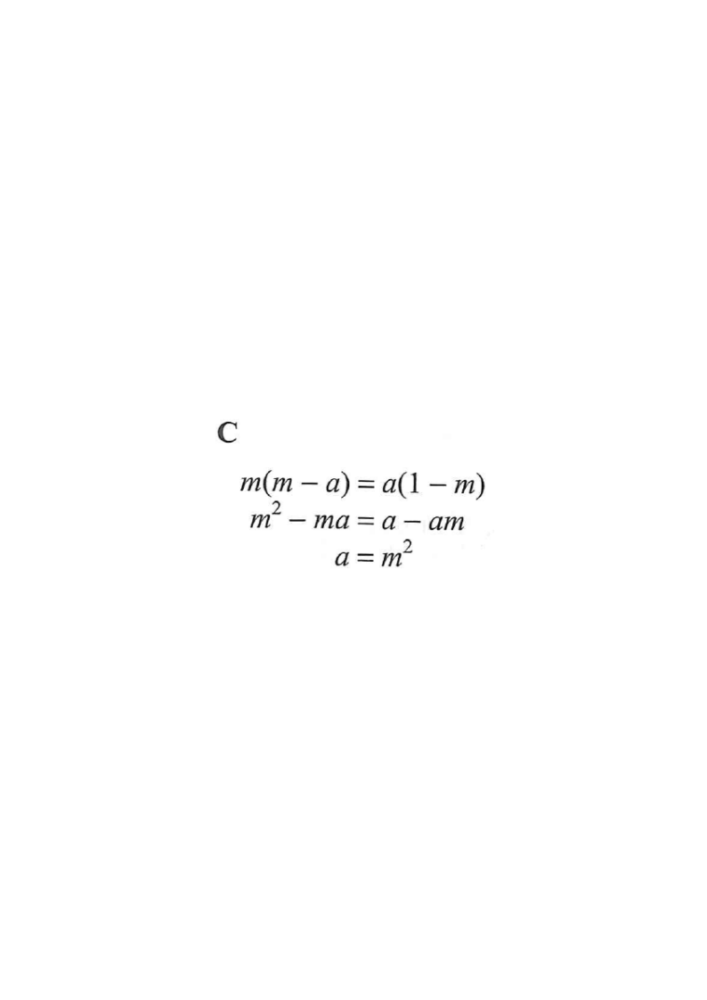

Step 1 — Start with the given equation.
Question. If $m(m-a)=a(1-m)$, then $a=$

Question. If \(p(p+q)=q(3-p)\), then \(q=\)A. \(p\) B. \(\dfrac{p^{2}}{3}\) C. \(\dfrac{p^{2}}{3-2p}\) D. \(\dfrac{p^{2}+p}{3}\) (1 mark)